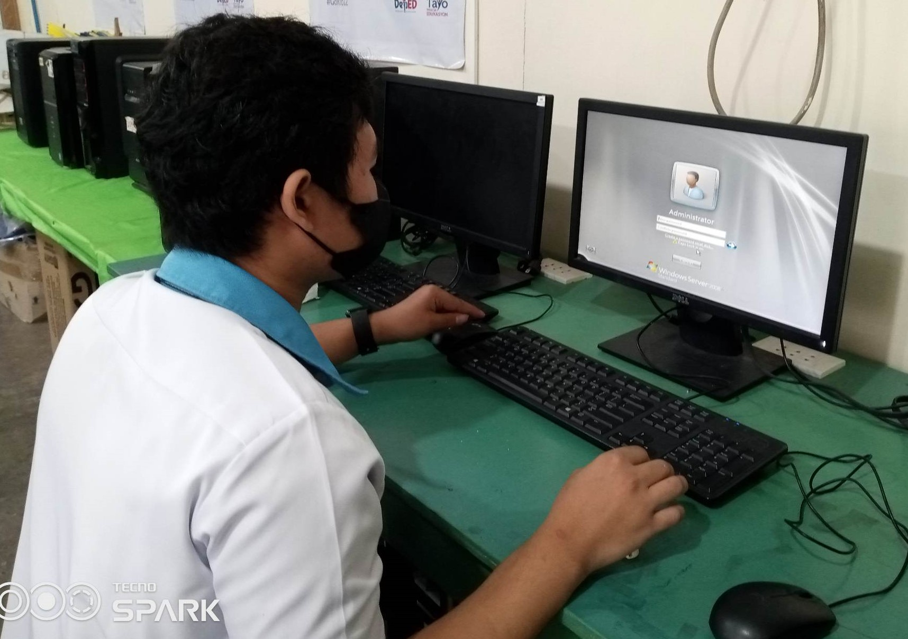

Exploring the World Through my Laptop or Computer
One of my favorite ways to spend my time is exploring the endless possibilities of my laptop. From learning new software to diving deep into fascinating topics online, my laptop is more than just a tool, it's a gateway to discovery.
Why Laptop Exploring ?
It's not just about using the device, it's about challenging myself to learn and grow. If I curious, laptop exploring can unlock new skills and open doors to endless opportunities.
